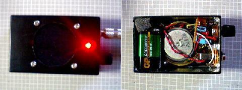

Bumper crop studio 386 Guitar Amp
2007年07月30日 カテゴリー：ヘッドフォンアンプ・その他アンプ

Bumper crop studioの386 Guitar Ampです。以前スピーカー2発で作ってたんですがDeanMarkley K-15に練習用アンプの座を奪われていました。なので今回はコンパクトに組みなおして手軽に携帯できるということを重点におきました。takerock Rock'nRoll HeavenのEros Union Ampを参考にボリュームとトーンを削除してます。電源スイッチはジャックです。ゲインはたまたまあった1kBのポットを使いましたが、これで丁度いいです。ボリュームがないのはあまり良くないかと思いましたが、電源オン・オフ時の雑音はたいして出てません。まあ壊れたらそんときはそんときで。
レイアウトはその場で適当に考えたので、内部に余裕がないです。スピーカーの前面はそこらへんにあった布を張っています。こうしないとスピーカーがバリバリいいます。スピーカーは100円ですが全然問題ないです。夜だとうるさいぐらいの音量がでます。
そういえば、使おうとしたポットが2個も壊れてました。確かに使い古したヤツだったんですが、あんまり熱しすぎると壊れるみたいです。今まで電解コンデンサでも壊れたことないんですが…電解コンデンサより弱いんでしょうか。とりあえずつける前にちゃんとチェックしないといけません。